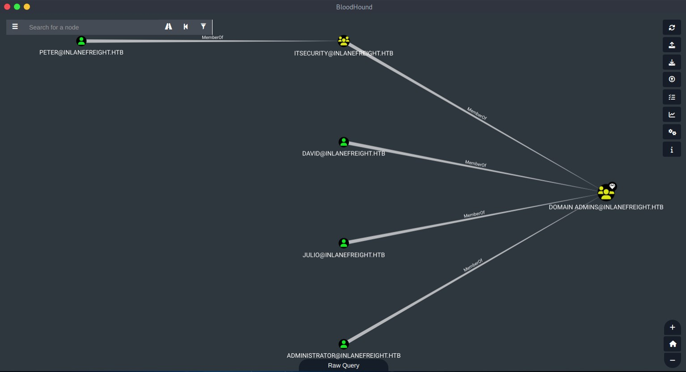
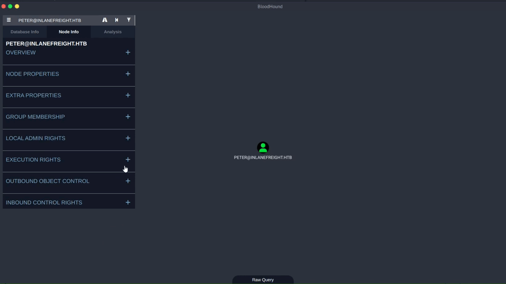
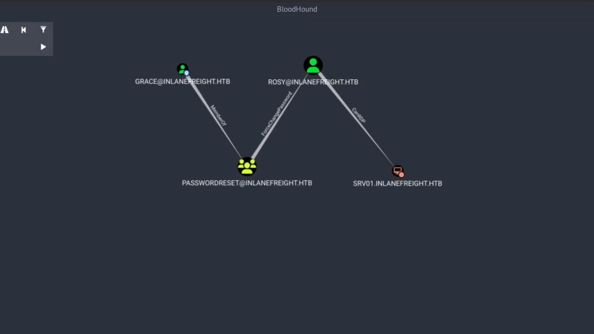
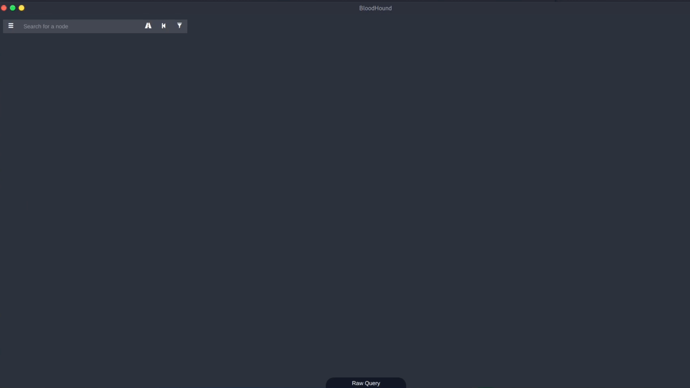
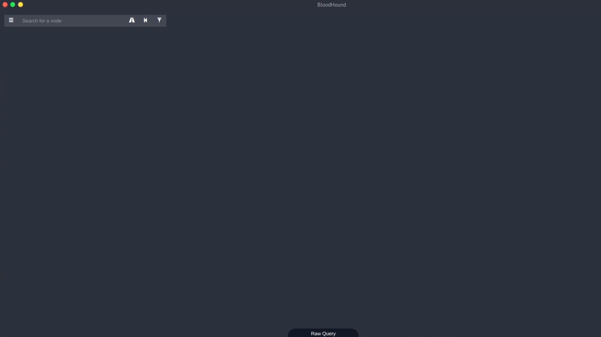

Bloodhound
Collection
SharpHound
The option --collectionmethod or -c allows us to specify what kind of data we want to collect. In the help menu above, we can see the list of collection methods. Let's describe some of them that we haven't covered:
All: Performs all collection methods exceptGPOLocalGroup.
DCOnly: Collects data only from the domain controller and will not try to get data from domain-joined Windows devices. It will collect users, computers, security groups memberships, domain trusts, abusable permissions on AD objects, OU structure, Group Policy, and the most relevant AD object properties. It will attempt to correlate Group Policy-enforced local groups to affected computers.
ComputerOnly: This is the opposite ofDCOnly. It will only collect information from domain-joined computers, such as user sessions and local groups.
Bloodhound GUI
When we log in successfully, BloodHound will perform the query: Find all Domain Admins and display the users that belong to the group.

Right clicking on a node,
| Command | Description |
| Set as Starting Node | Set this node as the starting point in the pathfinding tool. Click this, and we will see this node’s name in the search bar. Then, we can select another node to target after clicking the pathfinding button. |
| Set as Ending Node | Set this node as the target node in the pathfinding tool. |
| Shortest Paths to Here | This will perform a query to find all shortest paths from any arbitrary node in the database to this node. This may cause a long query time in neo4j and an even longer render time in the BloodHound GUI. |
| Shortest Paths to Here from Owned | Find attack paths to this node from any node you have marked as owned. |
| Edit Node | This brings up the node editing modal, where you can edit current properties on the node or even add our custom properties to the node. |
| Mark Group as Owned | This will internally set the node as owned in the neo4j database, which you can then use in conjunction with other queries such as “Shortest paths to here from Owned”. |
| Mark/Unmark Group as High Value | Some nodes are marked as “high value” by default, such as the domain admins group and enterprise admin group. We can use this with other queries, such as “shortest paths to high-value assets”. |
| Delete Node | Deletes the node from the neo4j database. |
Nodes
Nodes are the objects we interact with using BloodHound. These represent Active Directory and Azure objects. However, this section will only focus on Active Directory objects.
When we run SharpHound, it collects specific information from each node based on its type. The nodes that we will find in BloodHound according to version 4.2 are:
| Node | Description |
| Users | Objects that represent individuals who can log in to a network and access resources. Each user has a unique username and password that allows them to authenticate and access resources such as files, folders, and printers. |
| Groups | Used to organize users and computers into logical collections, which can then be used to assign permissions to resources. By assigning permissions to a group, you can easily manage access to resources for multiple users at once. |
| Computers | Objects that represent the devices that connect to the network. Each computer object has a unique name and identifier that allows it to be managed and controlled within the domain. |
| Domains | A logical grouping of network resources, such as users, groups, and computers. It allows you to manage and control these resources in a centralized manner, providing a single point of administration and security. |
| GPOs | Group Policy Objects, are used to define and enforce a set of policies and settings for users and computers within an Active Directory domain. These policies can control a wide range of settings, from user permissions to network configurations. |
| OUs | Organizational Units, are containers within a domain that allow you to group and manage resources in a more granular manner. They can contain users, groups, and computers, and can be used to delegate administrative tasks to specific individuals or groups. |
| Containers | Containers are similar to OUs, but are used for non-administrative purposes. They can be used to group objects together for organizational purposes, but do not have the same level of administrative control as OUs. |
Nodes Elements
The Node Info tab displays specific information for each node type, categorized into various areas
Note: For the following node types, we will only describe the sections that are unique for each one.Users

| Category | Description |
| Overview | General information about the object. |
| Node Properties | This section displays default information about the node |
| Extra Properties | This section displays some other information about the node, plus all other non-default, string-type property values from Active Directory if you used the –CollectAllProperties flag. |
| Group Membership | This section displays stats about Active Directory security groups the object belongs to. |
| Local Admin Rights | Displays where the object has admin rights |
| Execution Rights | Refers to the permissions and privileges a user, group, or computer has to execute specific actions or commands on the network. This can include RDP access, DCOM execution, SQL Admin Rights, etc. |
| Outbound Object Control | Visualize the permissions and privileges that a user, group, or computer has over other objects in the AD environment |
| Inbound Control Rights | Visualize the permissions and privileges of other objects (users, groups, domains, etc.) over a specific AD object. |

Just some example
Searching which computer sarah is an Administrator of:
Search bar: “User:Sarah” click on her email, then go down to local admin rights, clicking first degree local admin.

Computers

| Category | Description |
| Local Admins | Refers to the users, groups, and computers granted local administrator privileges on the specific computer. |
| Inbound Execution Rights | Display all the objects (users, groups, and computers) that have been granted execution rights on the specific computer |
| Outbound Execution Rights | Refers to the rights of the specific computer to execute commands or scripts on other computers or objects in the network. |
Groups

| Category | Description |
| Group Members | Refers to the users, groups, and computer members of the specific group. |
Domains

| Category | Description |
| Foreign Members | Are users or groups that belong to a different domain or forest than the one currently being analyzed |
| Inbound Trusts | Refers to trust relationships where another domain or forest trusts the current domain. This means that the users and groups from the trusted domain can access resources in the current domain and vice versa. |
| Outbound Trusts | Refers to trust relationships where the current domain or forest trusts another domain. This means that the users and groups from the current domain can access resources in the trusted domain and vice versa. |
In the Domain Overview section, we had an option named Map OU Structure. This one is helpful if we want a high-level overview of the Active Directory and how it is organized.
Organizational Unit (OU)

| Category | Description |
| Affecting GPOs | Refers to the group policy objects (GPOs) affecting the specific OU or container. |
| Descendant Objects | Refers to all objects located within a specific OU or container in the Active Directory (AD) environment. |
Containers

Group Policy Objects (GPO)

{kind=link}
{kind=link}
Edges
BloodHound uses edges to represent the relationships between objects in the Active Directory (AD) environment

Example:Domain Adminshas theAdminToedge onWS01.
The following is a list of the edges available for Active Directory in BloodHound:
Abusing a edge
An edge will allow us to move from one object to another
If we don't know how to abuse an edge, we can right-click the edge and see the help provided in BloodHound.
{kind=link}

Example of how useful using “ForceChangePassword”:

Analyzing Bloodhound Data
| Query | Result |
Find Principals with DCSync Rights | Find accounts that can perform the DCSync attack, which will be covered in a later module. |
Users with Foreign Domain Group Membership | Find users that belong to groups in other domains. This can help mount cross-trust attacks. |
Groups with Foreign Domain Group Membership | Find groups that are part of groups in other domains. This can help mount cross-trust attacks. |
Map Domain Trusts | Find all trust relationships with the current domain. |
Shortest Paths to Unconstrained Delegation Systems | Find the shortest path to hosts with Unconstrained Delegation. |
Shortest Paths from Kerberoastable Users | Show the shortest path to Domain Admins by selecting from all users in a dropdown that can be subjected to a Kerberoasting attack. |
Shortest Path from Owned Principals | If we right-click a node and select Mark user as owned or Mark computer as owned, we can then run this query to see how far we can go from any users/computers that we have marked as "owned". This can be very useful for mounting further attacks. |
Shortest Paths to Domain Admins from Owned Principals | Find the shortest path to Domain Admin access from any user or computer marked as "owned". |
Shortest Paths to High-Value Targets | This will give us the shortest path to any objects that BloodHound already considers a high-value target. It can also be used to find paths to any objects that we right-click on and select Mark X as High Value. |
Owned Principals
Mark as Owned feature allows a user to mark a node as owned or controlled (Right click node and mark)
go to the Analysis tab and select Shortest Path from Owned Principals and we can see what activities to perform with the users, group or teams that we have compromised.

Some practical example1:

From here we can see that enterprise admins group can perform a DCSync attack against the domain, mix of pathfinder and searchbar
Example2:

Clicking one user account, then Sessions we can find out which computer they are connected to, so we know where to go
Cypher Queries
Return all users
MATCH (u:User) RETURN ureturn user “peter”
MATCH (u:User {name:"PETER@INLANEFREIGHT.HTB"}) RETURN u
OR
MATCH (u:User) WHERE u.name = "PETER@INLANEFREIGHT.HTB" RETURN uquery which group the user peter is MemberOf and save it to a variable named peterGroups.
MATCH (u:User {name:"PETER@INLANEFREIGHT.HTB"})-[r:MemberOf]->(peterGroups)
RETURN peterGroupsCypher Attributes - Definitions

| Attribute | Definition |
Nodes | Represented with parentheses around the corresponding attributes and information. |
Variable | A placeholder represents a node or a relationship in a query. For example, in the query MATCH (n:User) RETURN n, the variable n represents the node labeled User. |
Relationships | Depicted by dashes and arrows, with the relationship type in brackets. These show the direction of the relationship. Ex: -> shows a relationship going one way, while - depicts a relationship going in both directions. In BloodHound, relationships are usually shown toward other privileges. |
Label | Used to group nodes based on their properties or characteristics. Labels are denoted by a colon : and are added to a variable. For example, in the query MATCH (n:User) RETURN n, the label User is used to group nodes with a user's characteristics. |
Property | Used to store additional information about a node or a relationship and is denoted by a curly brace {}. For example, in the query MATCH (n:User {name:"PETER@INLANEFREIGHT.HTB", enabled:TRUE}) RETURN n, the properties name and enabled are associated with the node n to store additional information about the user. |
More Examples:
Cypher query to return the user peter MemberOf relationship
MATCH p=((n:User {name:"PETER@INLANEFREIGHT.HTB"})-[r:MemberOf]->(g:Group))
RETURN p
Cypher uses keywords for specifying patterns, filtering, and returning results. The most common keywords are MATCH, WHERE, and RETURN.
| Keyword | Description |
MATCH | Used before describing the search pattern for finding one or more nodes or relationships. |
WHERE | Used to add more constraints to specific patterns or filter out unwanted patterns. |
RETURN | Used to specify the results format and organizes the resulting data. We can return results with specific properties, lists, ordering, etc. |
Return Peter's MemberOf relationships
MATCH p=((u:User {name:"PETER@INLANEFREIGHT.HTB"})-[r:MemberOf*1..]->(g:Group))
RETURN pHere we assign the variables u and g to User and Group, respectively, and tell BloodHound to find matching nodes using the MemberOf relationship (or edge). We are using something new, 1..*, in this query. In this case, it indicates that the path can have a minimum depth of 1 and a maximum depth of any number. The * means that there is no upper limit on the depth of the path. This allows the query to match paths of any depth that start at a node with the label User and traverse through relationships of type MemberOf to reach a node with the label Group.
We can also use a specific number instead of * to specify the maximum depth of the path. For example, MATCH p=(n:User)-[r1:MemberOf*1..2]->(g:Group) will match paths with a minimum depth of 1 and a maximum depth of 2, meaning that the user must traverse through precisely one or two "MemberOf" relationships to reach the group node.
Back to the query, the result is assigned to the variable p and will return the result of each path that matches the pattern we specified.
Find a path where the first group's name contains ITSECURITY
MATCH p=(n:User)-[r1:MemberOf*1..]->(g:Group)
WHERE nodes(p)[1].name CONTAINS 'ITSECURITY'
RETURN pWe have two nodes in the first group, Domain Users and ITSECURITY. The part nodes(p)[1].name refers to the name property of the first node in the path p obtained from the variable nodes(p). We use the CONTAINS keyword only to return the path where the first group's name contains the substring ITSECURITY.
Instead of the CONTAINS keyword, we can also use the =~ operator to check if a string matches a regular expression.
MATCH p=(n:User)-[r1:MemberOf*1..]->(g:Group)
WHERE nodes(p)[1].name =~ '(?i)itsecurity.*'
RETURN pWe used two elements of a regular expression (?i) tells the regular expression engine to ignore the case of the characters in the pattern, and .* to match any number of characters.
Note: We can also use regular expressions in properties or any other element in a cypher query.
There are many other tricks we can use with the cypher query. We can find the cypher query cheat sheet here.
The following query calculates the shortest paths to domain admins and is one we will use quite often to catch low-hanging fruit.
MATCH p=shortestPath((n)-[*1..]->(m:Group {name:"DOMAIN ADMINS@INLANEFREIGHT.HTB"}))
WHERE NOT n=m
RETURN p
Misc Details
Search bar
The search bar is one of the elements of BloodHound that we will use the most. We can search for specific objects by their name or type. If we click on a node we searched, its information will be displayed in the node info tab.
If we want to search for a specific type, we can prepend our search with node type, for example, user:peter or group:domain. Let's see this in action:
{kind=link}

Here's the complete list of node types we can prepend to our search:
Active Directory
- Group
- Domain
- Computer
- User
- OU
- GPO
- Container
Azure
- AZApp
- AZRole
- AZDevice
- AZGroup
- AZKeyVault
- AZManagementGroup
- AZResourceGroup
- AZServicePrincipal
- AZSubscription
- AZTenant
- AZUser
- AZVM
PathFinding
We can use it to find an attack path between two given nodes.
For example, we can look for an attack path from ryan to Domain Admins. The path result is:
Ryan > Mark > HelpDesk > ITSecurity > Domain Admins
This path contains the edge ForceChangePassword; let's say we want to avoid changing users' passwords. We can use the filter option, uncheck ForceChangePassword, and search for the path without this edge. The result is:
Ryan > AddSelf > Tech_Support > Testinggroup > HelpDesk > ITSecurity > Domain Admins
{kind=link}

Settings
Settings: Allows us to adjust the display settings for nodes and edges, enabling query to debug mode, low detail mode, and dark mode.Node Collapse Threshold: Collapse nodes at the end of paths that only have one relationship. 0 to Disable, Default 5.
Edge Label Display: When to display edge labels. If Always Display, edges such as MemberOf, Contains, etc., will always be said.
Node Label Display: When to display node labels. If Always Display, node names, user names, computer names, etc., will always be displayed.
Query Debug Mode: Raw queries will appear in Raw Query Box. We will discuss more on this in the Cypher Queries section.
Low Detail Mode: Graphic adjustments to improve performance.
Dark Mode: Enable Dark mode for the interface.

Shortcuts
There are four (4) shortcuts that we can take advantage from:
| Shortcut | Description |
CTRL | Pressing CTRL will cycle through the three different node label display settings - default, always show, always hide. |
Spacebar | Pressing the spacebar will bring up the spotlight window, which lists all currently drawn nodes. Click an item in the list, and the GUI will zoom into and briefly highlight that node. |
Backspace | Pressing backspace will return to the previous graph result rendering. This is the same functionality as clicking the Back button in the search bar. |
S | Pressing the letter s will toggle the expansion or collapse of the information panel below the search bar. This is the same functionality as clicking the More Info button in the search bar. |
Cheatsheets
•
https://gist.github.com/jeffmcjunkin/7b4a67bb7dd0cfbfbd83768f3aa6eb12
•
https://hausec.com/2019/09/09/bloodhound-cypher-cheatsheet/